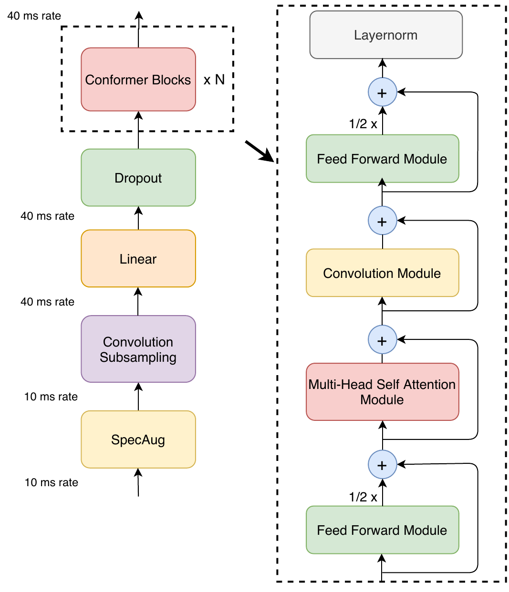
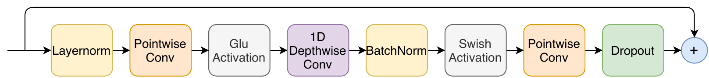

On this page
Let’s take a look at an ASR model that blends CNNs with transformers for speech. Vanilla transformers are great for global context but are weak at capturing local details like phoneme edges and formants. CNNs are excellent for local structure, but they miss global dependencies. The Conformer, a "convolution-augmented transformer," has both.
Unlike models for text, an ASR model takes continuous audio as input. Because audio data has a high sampling rate, such as 16 kHz, we first need to extract acoustic features. Common choices are log-mel spectrogram or filterbank features. For one second of speech, you might get 100 frames with 80 dimensions each ($100 \times 80$). Just as an embedding layer projects 1D tokens into a vector space, in speech processing, there is a linear or convolutional layer that projects the acoustic features into the model's dimension, $d_{model}$. For example, this can result in an $80 \times 256$ matrix, so your token embeddings now have the dimensions $T \times d_{model}$ (e.g., $100 \times 256$).
Before the blocks, most systems shrink time itself.
Input: 40 frames
Output: 20 frames
Takeaway: attention costs T squared, and T is 100 frames a second. Merging neighbors before the first block is the cheapest speedup in ASR: stride 2 quarters the attention bill. The price is resolution, and you pay it in phonemes.
A transformer encoder block looks like this:
x → [MHSA] → +residual → [FFN] → +residual → out
Conformer changes this to:
x → [FFN(0.5)] → [MHSA] → [Conv] → [FFN(0.5)] → out
The Conformer block calls these two feed-forward networks a "macaron-style feed-forward network," so named because the main attention and convolution modules are sandwiched between two FFNs, like the filling in a macaron. They add capacity and non-linearity but don’t mix information across time steps. They scale the FFN by half to match the contribution of one FFN in a vanilla transformer.

Pick a module. Tap a numbered hotspot on the figure, or a button above, and its one-line explanation lands here. Or press Play and watch the block assemble itself.

Figure 2 of the paper, for the curious: "Convolution module. The convolution module contains a pointwise convolution with an expansion factor of 2 projecting the number of channels with a GLU activation layer, followed by a 1-D Depthwise convolution. The 1-D depthwise conv is followed by a Batchnorm and then a swish activation layer."
The large model without a language model (2.1 / 4.3) is dimmed because the page already reports it above. The new numbers here are the with-LM rows and the small model.
Rebuilt from Figure 1 of Gulati et al. (Interspeech 2020). arXiv:2005.08100
Figure 1, verbatim caption: "Conformer encoder model architecture. Conformer comprises of two macaron-like feed-forward layers with half-step residual connections sandwiching the multi-headed self-attention and convolution modules. This is followed by a post layernorm."
Gulati, A., Qin, J., Chiu, C.-C., Parmar, N., Zhang, Y., Yu, J., Han, W., Wang, S., Zhang, Z., Wu, Y., and Pang, R. Conformer: Convolution-augmented Transformer for Speech Recognition. Interspeech 2020. arXiv:2005.08100. https://arxiv.org/abs/2005.08100
Takeaway: the diagram says the two half FFNs add up to one whole. Drag the sliders: the green bar and the purple bar never separate. Half plus half is one, no matter where you put the halves.
These are the actual models from the paper, with the actual numbers. Hit Play to pull the conv module out of each model one at a time, or flip the checkbox to remove it from all three at once. Either way the conv module's params come out, while the reported WER stays put.
Hit Play and watch the orange slice come out of each bar, one model at a time.
Param math, approximate: totals are the paper's reported params. Conv cost per block is about 3d2 (the two pointwise projections: 2d2 to expand d to 2d before the GLU gate, then d2 to project back to d; biases, LayerNorm, and the depthwise conv's own params are ignored), times the block count from the paper's table. That gives:
(The cards show kernel 32, the paper's S/M/L config value; the PyTorch code further down uses kernel_size=15 as a round working number. The kernel size does not enter this estimate anyway, since the depthwise conv's own params are ignored too.) The WER numbers are the paper's reported results with the conv module in place. The toggle only subtracts its param cost; it does not predict what WER would be without it. That is the point: isolate what local detail costs, and compare it to what it buys.
How to play with this. Hit Play and watch the demo pull the conv module out of each model, one size at a time. The orange slice on each bar is the conv module's share of the parameters; it shrinks to nothing while the WER line next to it stays put. The Convolution Module hotspot in Figure 1 above flashes each time, showing you exactly which piece just left. At the end of the tour it flashes once more against the block that remains. Or skip the tour and flip the checkbox to yank the conv module out of all three at once.
What you are seeing. Each bar is one model's total parameter count, scaled so the 139M transformer baseline fills the whole track. The blue part is the rest of the model; the orange tip is the conv module's rough cost, about 3d2 per block, which works out to S 1.00M, M 3.15M, L 13.37M. The numbers next to the bars are the paper's reported test-other WER with the conv module in place. The toggle only subtracts the orange cost; it does not predict what the WER would be without it. That is the whole point: isolate what local detail costs, then compare it to what it buys.
Takeaway: Conformer (M) is 30.7M params and scores 5.0 on test-other, beating a 139M transformer at 5.6. The conv module costs only about 3.1M of those 30.7M. Local detail, bought cheap. That is the whole trick.
The first FFN applies a 2-layer MLP to each frame independently. The dimension might be expanded to $d_{ff}$ (e.g., 1024). The usual transformer choice is a 4x expansion, so with $d_{model}=256$ that gives you exactly 1024, which is what the code below uses. The demo up top does its own rough conv-only count (about 3d2 per block); it never touches this FFN math. It is then scaled back so a half-scaled residual connection can be added to the input.
So far, the input is $B \times T \times d_{model}$; this is the output from the first FFN and its residual connection. Now, you project this input, X, into queries, keys, and values:
Where the $W$ weight matrices are ${d_{model}} \times ({d_{model}}/{k})$ for $k$ heads. With $d_{model} = 256$ and $k = 4$ heads, each $W$ is $256 \times 64$: every head gets its own 64-dim room to work in. You then compute attention:
In words: score every frame against every other frame, divide by $\sqrt{d_k}$ so the scores stay in a range softmax can handle, and take a weighted mix of the values.
Concatenate the heads, project back with $W_o$, and add the residual:
This is almost the same as a vanilla transformer, but instead of sinusoidal encodings, it uses relative positions, which generalize better to long sequences and relative timing. With absolute positional encodings, for each input position, you would update the input as $x_t \leftarrow x_t + PE(t)$. The model is given the known positions, and the query and key themselves get shifted by this absolute index.
With relative positional encoding, we don’t alter the input embeddings directly. Instead, we introduce an extra bias term in the attention score based on the relative distance. The model learns biases based on the relative distances between tokens. Speech is shift-invariant: a phoneme like "ba" at 1 second and 10 seconds should be treated the same. What matters is how far apart the tokens are, not their absolute index.
Here, $r_{(i-j)}$ is a learned embedding for the relative offset between positions $i$ and $j$. In words: the usual query-key match, plus a learned bonus for how far apart the two frames are. Two frames 5 apart get the same bonus no matter where they sit in the utterance. We define a maximum relative distance, and this offset can be anywhere between $-L \dots 0 \dots L$, where each row corresponds to a $d_k$ vector space. For a given pair, we look up the relative embedding and perform a dot product with the query, which gets added to the attention scores. The embedding table has dimensions $(2L+1) \times d_k$. You can share this R matrix across all heads.
Takeaway: the score is two questions added together: "do we sound alike" plus "how far apart are we". Relative positions make the second question about distance, so a "ba" is a "ba" at second 1 or second 10. Absolute positions make it about the clock, so shifting the utterance changes the answer.
Next is the convolution module, which is the big difference from vanilla transformers. This is a depthwise separable convolution used to explicitly model local sequential structure.
The input here is the sequence after attention did its thing: every frame already carries long-range context from the whole utterance. The shape is still $B \times T \times d_{model}$. The convolution module now layers local patterns on top: short-term temporal structure that attention is too coarse to catch.
The convolution module looks similar to those in EfficientNet and MobileNet.
bars sum to 1.0 at every probe position
Takeaway: the convolution reads like a magnifying glass: seven frames, seventy milliseconds, wherever you put it. Attention reads like gossip: it asks every frame in the utterance what it has to do with this one. The conv sees the edge and its neighbors; attention sees the edge and remembers the last time it heard one. That is why the block has both.
Let’s think: would you use LayerNorm or BatchNorm after this? LayerNorm would normalize per frame across all channels, so it could actually wash away the learned temporal filters. If you use BatchNorm, it normalizes per channel but across time and the batch. This way, each channel keeps its identity and normalization is consistent across time, which helps stabilize the convolution filters. So, BatchNorm makes more sense here, although it has challenges with running inference. BN would output zero-mean and unit-variance activations, so an activation function would help. Swish would let small negative values pass through, which can be crucial in audio processing.
BatchNorm has two modes, and the difference is where streaming gets tricky. During training, BatchNorm computes the mean and variance of the batch and time dimensions for each channel to normalize the values, along with learnable scale ($\gamma$) and shift ($\beta$) parameters for each channel. It additionally keeps a running estimate of both mean and variance, which is not used during the training forward pass but is stored to be used during inference later. During inference, you don’t use the batch statistics of the test data. You use the stored running stats along with the same learnable parameters to normalize the data:
In words: subtract the running mean, divide by the running spread, then let $\gamma$ and $\beta$ re-scale and re-shift each channel. The running stats are frozen from training; the test batch never gets a vote.
Let me run one channel through it with toy numbers, so the symbols stop being abstract. Say a frame comes out of the depthwise conv with x = 1.5 on some channel, and training left us μrunning = 0.5, σ2running = 0.25, γ = 2, β = 0.1. (I am ignoring ε here; it only guards against dividing by zero.)
BatchNorm at inference, one channel, toy numbers. Each stage does exactly one thing to the value: center it, scale it to unit spread, then let the learned γ and β put it wherever the network wants it.
And here is the streaming catch from above, in numbers: those frozen stats (0.5, 0.25) were measured over the whole training set. A live chunk might have a true local mean of 1.2, but it still gets centered by 0.5. That mismatch is the price of not waiting for the future.
Now, with streaming ASR, the issue is that during training, the stats were computed on long sequences and full batches of data. During streaming, you’re normalizing with global averages that don’t match the local chunk you’re currently processing. Additionally, in streaming, you don’t want to wait for future frames to compute stats, so you need a causal or online version of BatchNorm. There are variations of causal BN where the mean and variance are computed over frames $\le t$, so normalization only depends on the past. It’s incrementally updated as new frames arrive. There’s also a sliding-window BN that updates based only on the last W frames. In the beginning, however, these statistics can be unreliable, so they typically kick in once the state becomes reliable. Alternatively, you can use other normalizations that are more real-time friendly, like LayerNorm.
Anyway, the Conformer then applies a BatchNorm and a Swish activation. Finally, another pointwise convolution with dropout is applied, which performs a $d_{model} \rightarrow d_{model}$ mapping. Lastly, a residual connection is added from the start of the module to its output. This might seem redundant, but it introduces another cross-channel interaction which can be helpful for expressiveness, as depthwise convolution is a per-channel, local filter.
This is our convolution block. The output from the convolution block remains $B \times T \times d_{model}$. After this, another feed-forward network, similar to the one before, is applied to each frame with a residual connection to complete the macaron-style design. It expands $d_{model}$ to $d_{ff}$, applies a non-linearity, projects back to $d_{model}$ with dropout, and adds a scaled version of that as a residual. The shape remains $B \times T \times d_{model}$. This helps with stacking blocks, and we know that machine learning practitioners love stacking blocks!
The first FFN before the attention module enriches the frame-level features before they interact globally. The second FFN enriches the representation after it has been mixed both globally and locally. That symmetry is why the block trains more stably than the same pieces stacked in a different order.
Let's build the block piece by piece. First, the macaron FFN. This is just a normal two-layer MLP, but notice the residual is scaled by 0.5. That is the whole macaron trick: two of these add up to one full FFN.
import torch
import torch.nn as nn
import torch.nn.functional as F
class ConformerFFN(nn.Module):
def __init__(self, d_model, d_ff, dropout=0.1):
super().__init__()
self.linear1 = nn.Linear(d_model, d_ff)
self.linear2 = nn.Linear(d_ff, d_model)
self.dropout = nn.Dropout(dropout)
self.activation = nn.SiLU() # Swish
def forward(self, x):
out = self.linear1(x)
out = self.activation(out)
out = self.dropout(out)
out = self.linear2(out)
out = self.dropout(out)
return x + 0.5 * out # Macaron: scale by 0.5
Next, self-attention. I am showing the vanilla version here to keep it readable. The relative positional bias we talked about above slots right into the score computation.
class MHSA(nn.Module):
def __init__(self, d_model, num_heads, dropout=0.1):
super().__init__()
assert d_model % num_heads == 0
self.h = num_heads
self.d_k = d_model // num_heads
self.W_q = nn.Linear(d_model, d_model)
self.W_k = nn.Linear(d_model, d_model)
self.W_v = nn.Linear(d_model, d_model)
self.W_o = nn.Linear(d_model, d_model)
self.dropout = nn.Dropout(dropout)
def forward(self, x, mask=None):
B, T, D = x.shape
Q = self.W_q(x).view(B, T, self.h, self.d_k).transpose(1, 2)
K = self.W_k(x).view(B, T, self.h, self.d_k).transpose(1, 2)
V = self.W_v(x).view(B, T, self.h, self.d_k).transpose(1, 2)
scores = torch.matmul(Q, K.transpose(-2, -1)) / (self.d_k ** 0.5)
if mask is not None:
scores = scores.masked_fill(mask == 0, float("-inf"))
attn = F.softmax(scores, dim=-1)
out = torch.matmul(attn, V)
out = out.transpose(1, 2).contiguous().view(B, T, D)
return x + self.dropout(self.W_o(out)) # residual
Now the convolution module, the part that makes a Conformer a Conformer. Pointwise conv plus GLU, a depthwise conv over time, BatchNorm plus Swish, then pointwise back. Watch the transpose dance: Conv1d wants channels first.
class ConformerConvModule(nn.Module):
def __init__(self, d_model, kernel_size=15, dropout=0.1, causal=False):
super().__init__()
self.layer_norm = nn.LayerNorm(d_model)
self.pointwise_conv1 = nn.Conv1d(d_model, 2*d_model, kernel_size=1)
padding = (kernel_size - 1) if causal else (kernel_size - 1) // 2
self.depthwise_conv = nn.Conv1d(
d_model, d_model, kernel_size,
groups=d_model, padding=padding
)
self.causal = causal
self.batch_norm = nn.BatchNorm1d(d_model)
self.pointwise_conv2 = nn.Conv1d(d_model, d_model, kernel_size=1)
self.dropout = nn.Dropout(dropout)
def forward(self, x):
residual = x
x = self.layer_norm(x)
x = x.transpose(1, 2) # (B, d_model, T)
x = self.pointwise_conv1(x)
A, B = x.chunk(2, dim=1)
x = A * torch.sigmoid(B) # GLU
x = self.depthwise_conv(x)
if self.causal:
x = x[:, :, :residual.size(1)] # trim if causal
x = self.batch_norm(x)
x = F.silu(x)
x = self.pointwise_conv2(x)
x = x.transpose(1, 2) # back to (B, T, d_model)
return residual + self.dropout(x) # residual
And finally, the whole block. FFN, attention, conv, FFN, with a LayerNorm at the end, which is what most implementations do.
class ConformerBlock(nn.Module):
def __init__(self, d_model=256, d_ff=1024, num_heads=4, kernel_size=15, dropout=0.1, causal=False):
super().__init__()
self.ffn1 = ConformerFFN(d_model, d_ff, dropout)
self.mhsa = MHSA(d_model, num_heads, dropout)
self.conv = ConformerConvModule(d_model, kernel_size, dropout, causal)
self.ffn2 = ConformerFFN(d_model, d_ff, dropout)
self.final_ln = nn.LayerNorm(d_model) # often added at block end
def forward(self, x, mask=None):
x = self.ffn1(x)
x = self.mhsa(x, mask)
x = self.conv(x)
x = self.ffn2(x)
return self.final_ln(x)
So does the sandwich actually beat a plain transformer? Here are numbers reported in the original Conformer paper (Gulati et al., 2020) on LibriSpeech, without an external language model. WER is word error rate, lower is better:
| Model | test-clean | test-other |
|---|---|---|
| Transformer (transducer) | 2.4 | 5.6 |
| ContextNet (L) | 2.1 | 4.6 |
| Conformer (M) | 2.3 | 5.0 |
| Conformer (L) | 2.1 | 4.3 |
Look at the medium Conformer: at 30.7M params it already beats the 139M-param transformer transducer. Local plus global beats global alone. That is the payoff of the sandwich.
Now, how do you make the Conformer work in real-time? The attention mechanism, as we mentioned earlier, needs to change to a streaming attention where we restrict how far queries can look back using a fixed attention window with a causal mask. Sometimes speech can be ambiguous if you don’t peek a little into the future, so we can allow each frame to have a look-ahead by a fixed number of frames. This adds some latency but improves the model, and it can be easily configured in the attention mask. Additionally, you can make your multi-head attention into a multi-scale multi-head attention. Because information varies in length (a phoneme can be shorter, while syllables and words are longer), one head might be configured to span more frames than others to capture these different relationships.
Takeaway: offline attention is a luxury. In streaming you do not get the future for free, you rent it by the frame, and the rent is latency. Chunk 4, look-ahead 2: every frame sees its block plus two frames into the future, and those two frames cost 20 milliseconds. Make the look-ahead zero and watch the grid collapse to a causal triangle: perfectly real-time, flying blind into the future.
Takeaway: why should every head look the same distance? A phoneme is 50 ms, a word is 500. Give head one a short leash and head four the whole pasture. The model gets phoneme edges and word context in the same layer, for free.
The convolution module uses "same" padding, which will need to change to causal padding, and the normalization, as we discussed in depth, needs to change as well.
Stack a few of these blocks and you get rich acoustic embeddings, one per frame. Last step: turn frames into words.
One linear layer maps each frame from $d_{model}$ to $V$, your vocabulary size. That gives you $Z$, shaped $B \times T \times V$: a score for every vocab item at every frame. Softmax over the vocab axis turns those raw scores (logits) into probabilities:
In words: exponentiate each frame's scores and divide by the total, so every frame's vocabulary probabilities sum to one. Once you have this, you need to use a CTC loss to align the output probabilities with the text.